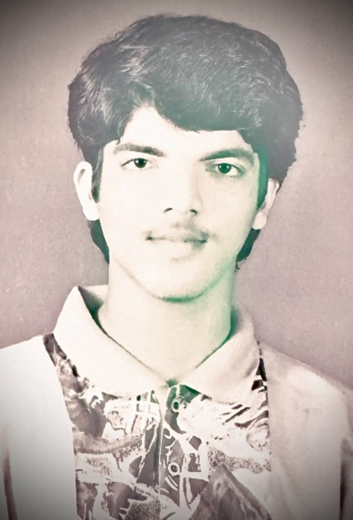

From a small town in Karnataka
to global boardrooms.

His mother ran the household like a founder runs a company — keeping cattle, cooking in large batches to support their family and local factory workers, turning a home into a hub of quiet entrepreneurial energy.
From the age of seven, Habib helped her — sticking posters, watching her manage work with grace, absorbing the grit and resourcefulness of someone building something out of very little. His love of food, people, and hustle was born in those smoke-filled kitchens, long before he had a name for any of it.
In the early 1990s, his curiosity moved beyond home. Fascinated by his brother's engineering work on the Konkan Railway tunnel through the Western Ghats, he joined Universal Engineering Company as a trainee — the first step in a career that would eventually cross 43 countries.